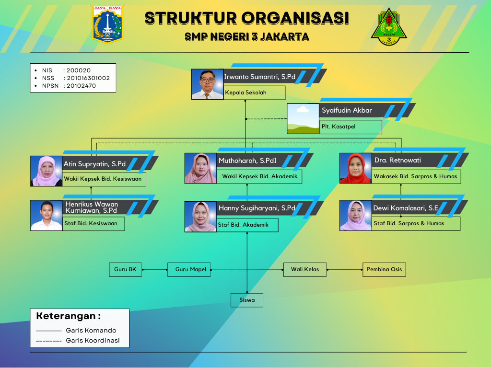

Profil Administrasi SMP Negeri 3 Jakarta
Informasi detail mengenai bagian administrasi sekolah.
Tugas dan Fungsi
Administrasi SMP Negeri 3 Jakarta memiliki peran penting dalam mendukung kelancaran operasional sekolah. Berikut adalah beberapa tugas dan fungsi utama kami:
- Manajemen Keuangan: Mengelola keuangan sekolah, menyusun laporan keuangan, dan mengurus gaji pegawai.
- Administrasi Kepegawaian: Mengelola data kepegawaian, mengurus rekrutmen dan mutasi pegawai.
- Administrasi Kesiswaan: Mengelola data siswa, menerbitkan transkrip nilai, dan membantu siswa dalam proses administrasi.
- Pengelolaan Inventaris: Mencatat dan mengelola inventaris sekolah, serta melakukan pemeliharaan inventaris.
- Persuratan dan Pengarsipan: Mengelola surat masuk dan keluar, serta mengarsipkan dokumen penting sekolah.
- Pelayanan: Memberikan pelayanan informasi kepada siswa, guru, orang tua, dan masyarakat terkait administrasi sekolah.
Struktur Organisasi

Kontak
Untuk informasi lebih lanjut mengenai profil Administrasi SMP Negeri 3 Jakarta, Anda dapat menghubungi langsung kantor TU sekolah pada jam kerja.
Alamat: Jl. Manggarai Utara IV/6, Tebet, Jakarta Selatan
Telepon: 082122210447
Email: smpnegeri3jakarta@gmail.com